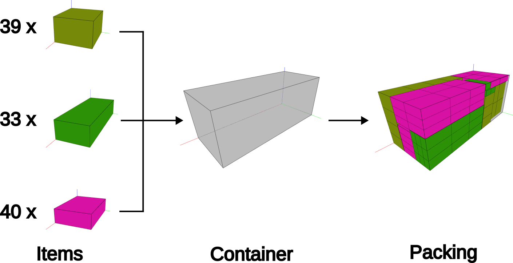
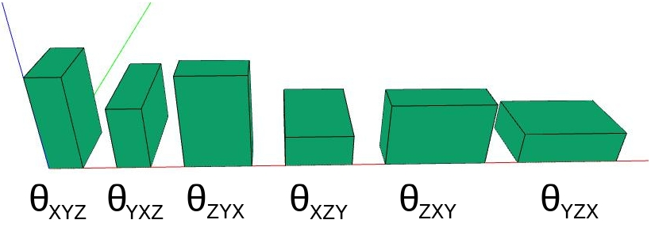
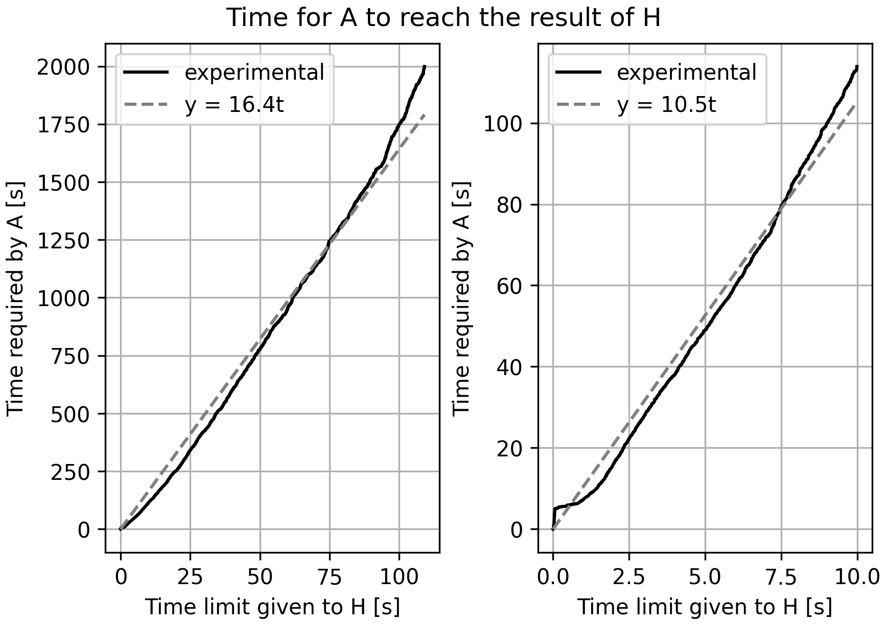

3D-SCLP
History
After I graduated in Mechanical Engineering, I started working at JettaCargo with logistic optimizations. I actually had not worked with that topic before joining them so it was quite a challenge. I did some amazing work that I am very proud of.
However, after some time there, I noticed I had too many gaps in my knownledge. I was studying and learning with my colleagues but something was odd, I felt like we were missing something. I decided I would look for it. I searched the internet for good universities in Brazil on Operations Research and I found Unicamp, more specifically I found the Laboratory of Optimization and Combinatorics (LOCo), a large research group dedicated to solving the problems that I was interested.
I joined Unicamp to do a Master's in Computer Science. I chose Professors Flávio Keidi Miyazawa and Thiago Alves de Queiroz to be my supervisor me because, among the professors of Unicamp, he was the one most aligned with my research interest: three-dimensional packing problems.
Problem Definition
From the beginning, I made it clear that I wished study and solve a three-dimensional single container packing problem, mostly because that was the main problem we solved at JettaCargo. The question was then which practical constraints we would add to the base problem. After lots of research and study, we decided to add no practical constraint and go to beating the current state-of-the-art algorithm. We are audacious!
In simple terms, the problem is defined by a set of Items and a Container. Both the items and the container are rectangular cuboids. The items have quantity (the number of that item that is available for allocating). Furthermore, each item has a set of up to six allowed orientations, meaning one can rotate then when allocating.


Previous Works
In the last few years, many authors proposed solutions for the 3D-SCLP. Below I listed some of them with their main contributions and also the results reported by the authors. References can be found in the References Section.
During the research, Araya et al. (2017) was the state-of-the-art, obtaining an average volume usage of 95.53% with a time limit of 30 seconds.
PE-08- Parreño et al. (2008)- compare the partition and cover representation for the residual space, they show that the latter yields better results;
FB-10- Fanslau and Bortfeldt (2010)- propose a tree search-based heuristic to solve the problem, this is the base of all subsequent tree search-based proposals;
GR-12- Goncalves and Resende (2012)- propose successful a Biased Random-Key Genetic Algorithms (BRKGA) for the 3D-SCPL;
ZE-12- Zhu et al. (2012)- simplified and improved the tree search-based heuristic of Fanslau and Bortfeldt (2010);
ZH-12- Zhang et al. (2012)- poposed the use of the contact surface to select blocks;
AR-14- Araya and Riff (2014)- expanded the tree search-based heuristic of Zhu et al. (2012) to a beam search;
RA-16- Ramos et al. (2016)- expanded the BRKGA algorithm of Goncalves and Resende (2012);
AA-17- Araya et al. (2017)- modified the evaluation function of Araya and Riff (2014);
| Heuristic | Volume Usage | Time Limit [s] |
|---|---|---|
| PE-08 | 91.05 | 100 |
| FB-10 | 93.88 | 320 |
| GR-12 | 94.54 | 147-p |
| ZE-12 | 94.59 | 500 |
| ZL-12 | 94.98 | 500 |
| ZH-12 | 94.53 | 600 |
| AR-14 | 95.40 | 500 |
| RA-16 | 94.71 | 274-p |
| AA-17 | 95.53 | 30 |
Proposed Heuristic
We reproduced the state-of-the-art with our own code implementation and proposed the following improvements:
- Data Structures:
-
- to implement the residual space, the state-of-the-art uses linked lists while we use a data structures with contiguous memory layout;
- to find the contact area between blocks, the state-of-the-art used the external library Bullet, that relies on collision detection methods, while we used a broad and narrow search technique combined with a contiguous memory storage.
- Skip Feature:
- we added a mechanism that avoid recomputations.
- Volume Loss Estimate:
- we used a different function to estimate the amount of volume lost when a block is allocated in an empty space;
- Configuration:
- both our and the state-of-the-art heuristics require the specification of parameters. To find good values, the state-of-the-art performed a manual search while we used irace for automatic algorithm configuration;
- Evaluation Function:
- we used a two-stage modification of the fitness function proposed by the state-of-the-art, allowing the heuristic to adapt and change its behavior at different phases of the allocation process;
Results
Average Volume Usage
The heuristic we proposed, with only 5 seconds (5-H), outperformed the state-of-the-art (AA-17) with 30 seconds by 0.11%. With 30 seconds (30-H), it outperformed the state-of-the-art by 0.52%
| Heuristic | Volume Usage | Time Limit |
|---|---|---|
| AA-17 | 95.53 | 30 |
| 5-H | 95.64 | 5 |
| 30-H | 96.05 | 30 |
Time Equivalence
The figure below presents the time required by state-of-the-art (A) to reach the results the proposed heuristic (H). The full black line shows the experimental result. Because of its apparent linear behavior, we made a linear curve fit f(t) = α · t to identify the angular coefficient α. The results demonstrate that H performs as well as A with one sixteenth of the time. In other words, given a time limit T to heuristic H, it would take 16·T for A to reach the same result.

f(t) = α · t. The value of α is displayed in each graph.Conclusion
Joining LOCo was the right choice. I developed a cool work and I was able to outperform the current state-of-the-art algorithm of the 3D-SCLP. I also came into contact with many different topics, solution techniques, and people, further expanding my knownledge on Algorithms, Combinatorial Optimization, and Operations Research. I am grateful for the supervision of Flávio and Thiago and all the people who were part of my journey.
References
Scientific Articles
- Araya, I., Guerrero, K., & Nuñez, E. (2017). VCS: A new heuristic function for selecting boxes in the single container loading problem. Computers & Operations Research, 82, 27-35.
- Araya, I., Moyano, M., Arielo, Lobo, B., Emiliano, & Guesser, L. (2017). Metasolver.
- Araya, I., & Riff, M. C. (2014). A beam search approach to the container loading problem. Computers & Operations Research, 43, 100-107.
- Fanslau, T., & Bortfeldt, A. (2010). A Tree Search Algorithm for Solving the Container Loading Problem. INFORMS Journal on Computing, 22, 222-235.
- Gonçalves, J. F., & Resende, M. G. C. (2012). A parallel multi-population biased random-key genetic algorithm for a container loading problem. Computers & Operations Research, 39, 179-190.
- Parreño, F., Alvarez-Valdés, R., Tamarit, J. M., & Oliveira, J. F. (2008). A Maximal-Space Algorithm for the Container Loading Problem. INFORMS Journal on Computing, 20, 412-422.
- Ramos, A. G., Oliveira, J. F., Gonçalves, J. F., & Lopes, M. J. P. (2016). A container loading algorithm with static mechanical equilibrium stability constraints. Transportation Research Part B-Methodological, 91, 565-581.
- Zhang, D., Peng, Y., & Leung, S. C. H. (2012). A heuristic block-loading algorithm based on multi-layer search for the container loading problem. Computers & Operations Research, 39, 2267-2276.
- Zhu, W., & Lim, A. (2012). A new iterative-doubling Greedy-Lookahead algorithm for the single container loading problem. European Journal of Operational Research, 222, 408-417.
- Zhu, W., Oon, W.-C., Lim, A., & Weng, Y. (2012). The six elements to block-building approaches for the single container loading problem. Applied Intelligence, 37, 431-445.
Links
- JettaCargo (linkedin and internet archive)
- Unicamp (internet archive)
- Laboratory of Optimization and Combinatorics (internet archive)
- Professor Flávio Keidi Miyazawa, Ph.D. (CV Lattes, internet archive)
- Professor Thiago Alves de Queiroz, Ph.D. (CV Lattes, ORCID, Linkedin, internet archive)
- Bullet Physics SDK
- irace: Iterated Racing for Automatic Algorithm Configuration